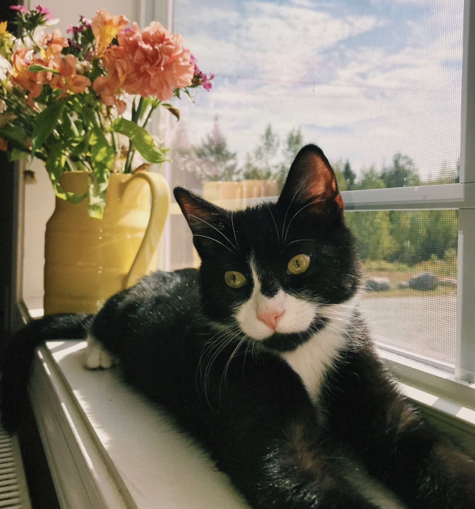
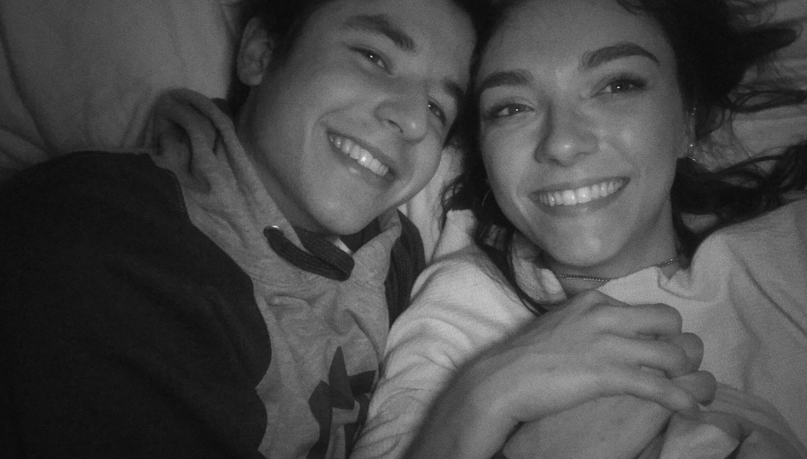
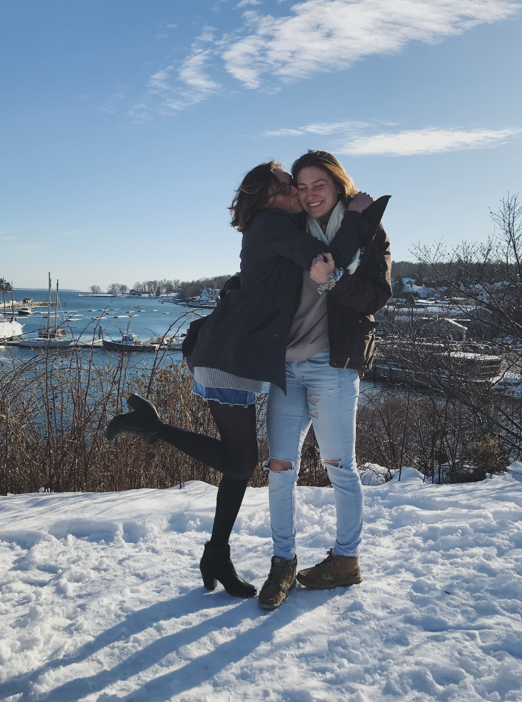
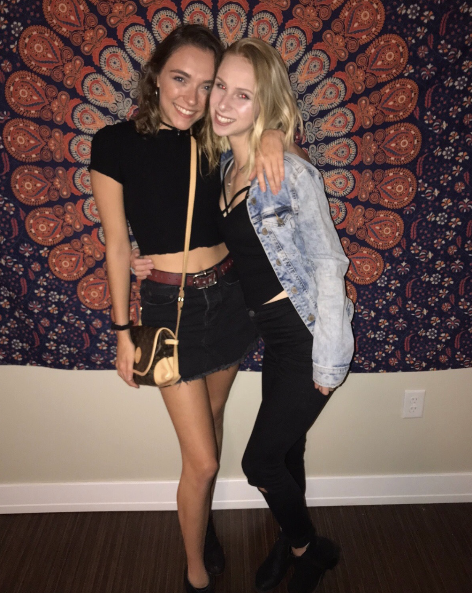
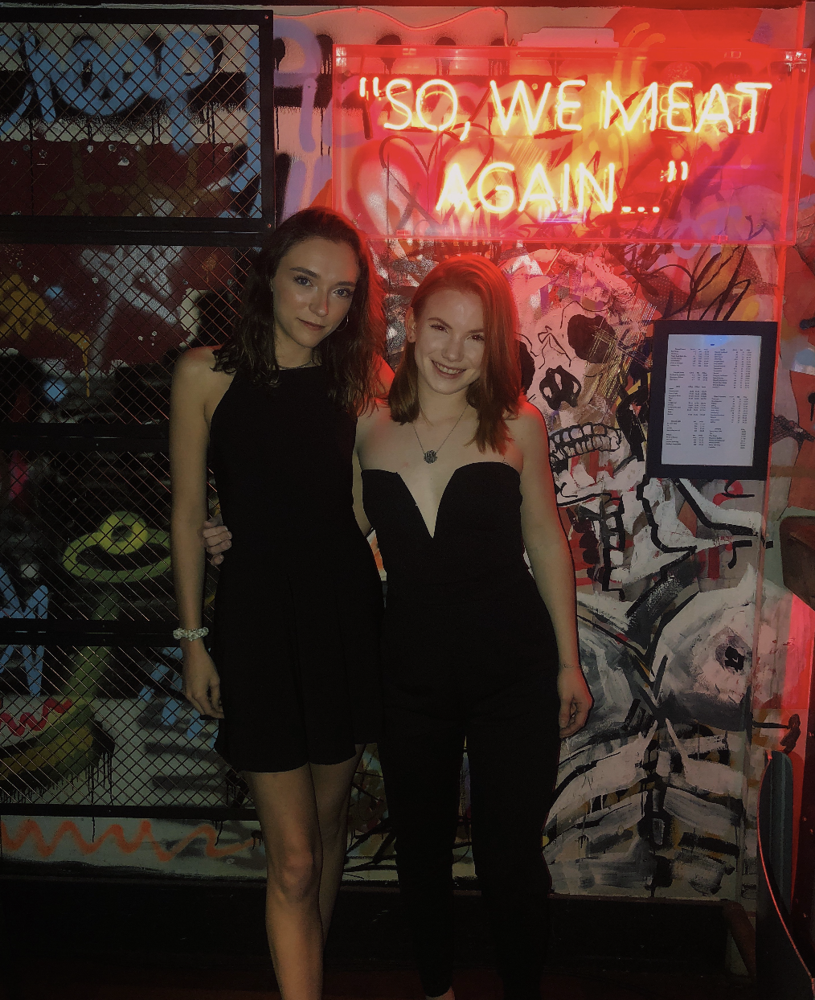
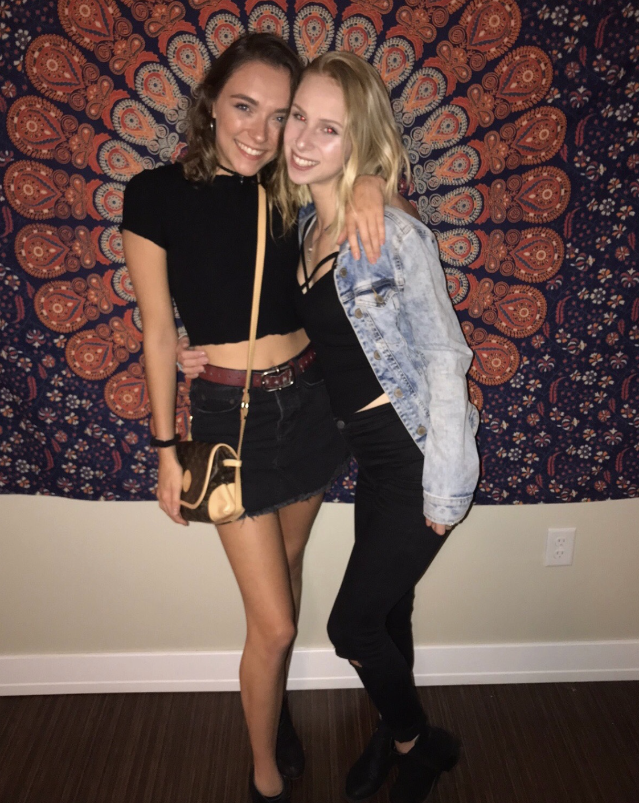
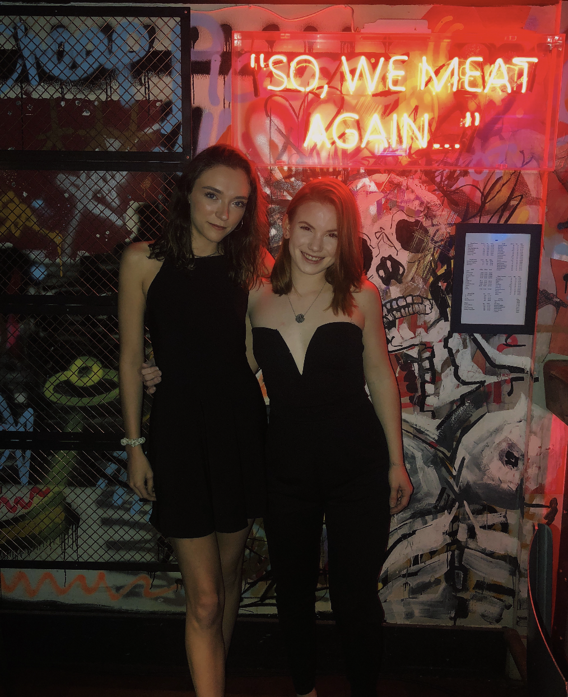

The people I Love Most
in no particular order
Probably the most important little person in my life is my kitty named Dooney. He's a CRAZY nine month old who enjoys catnip, meowing in the middle of the night for no reason, eating all of MY food, and sleeping in the sunlight that comes through the window.

Isabel is my oldest best friend out of this bunch. We became good friends in AP Environmental Science during our junior year of high school. Isabel and I are both obsessed with shopping, we go ice skating together in our free time, and known for being a dynamic duo back home in Camden. Her and I are the exact same person and sometimes it even freaks us out. I love her to bits, and always will.
 I met Turner during my fall semester of my sophomore year of college, and he's not only my boyfriend, but one of my best friends. There is never a dull moment when we're together. Whether it's listening to new music on Spotify, going to Massachusetts for a weekend, cooking dinner, or even just driving around, we're constantly laughing, chatting, or simply enjoying each others company. I'm very excited to make more memories with this one.
I met Turner during my fall semester of my sophomore year of college, and he's not only my boyfriend, but one of my best friends. There is never a dull moment when we're together. Whether it's listening to new music on Spotify, going to Massachusetts for a weekend, cooking dinner, or even just driving around, we're constantly laughing, chatting, or simply enjoying each others company. I'm very excited to make more memories with this one.

Amber is my best friend from since the first month of attending the University of Maine, and we actually met in our first ever college course, English 101. Amber and I even got matching tattoos together of a little fern because we both struggle with a lot of the same problems. Her and I got very close very quickly and this year we are actually living together in a house with our friends Jordan, Ashlyn, and Becky!

I met Ashlyn and Becky during first semester of freshman year at Umaine, and I was actually introduced to them through Amber! Everyone in our friend group from the Cumberland dorm hall would all hang out in Ashlyn and Becky's room and sometimes there would end up being a group of fifteen people in the small dorm rooms at once. Now, Ashlyn and Becky are roommates with Amber and I, as well as my friend Jordan!
 Jordan was also introduced to me during my first semester of freshman year in Becky and Ashlyn's room! Jordan is easily one of the spunkiest people I know and I love her to bits. She is always there for me to vent to and to give me advice when I need it. I also consider her to be the second mother to my kitty, Dooney, because if I am not there to snuggle him, she definitely will!

This is my best friend Alex, whom Amber ALSO introduced me to. Alex and I just recently travelled to Scotland together over the 2019 New Year and it was incredible. We went to clubs, a cute bar called the Boozy Cow (where this picture was actually taken), and visited with her grandparents and uncle in Glasgow, as well as going into the city of Edinburgh! Alex is a queen to say the least and I love and appreciate her so much.

Jordan was also introduced to me during my first semester of freshman year in Becky and Ashlyn's room! Jordan is easily one of the spunkiest people I know and I love her to bits. She is always there for me to vent to and to give me advice when I need it. I also consider her to be the second mother to my kitty, Dooney, because if I am not there to snuggle him, she definitely will!

This is my best friend Alex, whom Amber ALSO introduced me to. Alex and I just recently travelled to Scotland together over the 2019 New Year and it was incredible. We went to clubs, a cute bar called the Boozy Cow (where this picture was actually taken), and visited with her grandparents and uncle in Glasgow, as well as going into the city of Edinburgh! Alex is a queen to say the least and I love and appreciate her so much.
